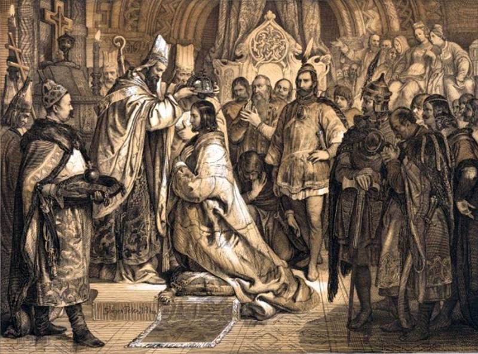
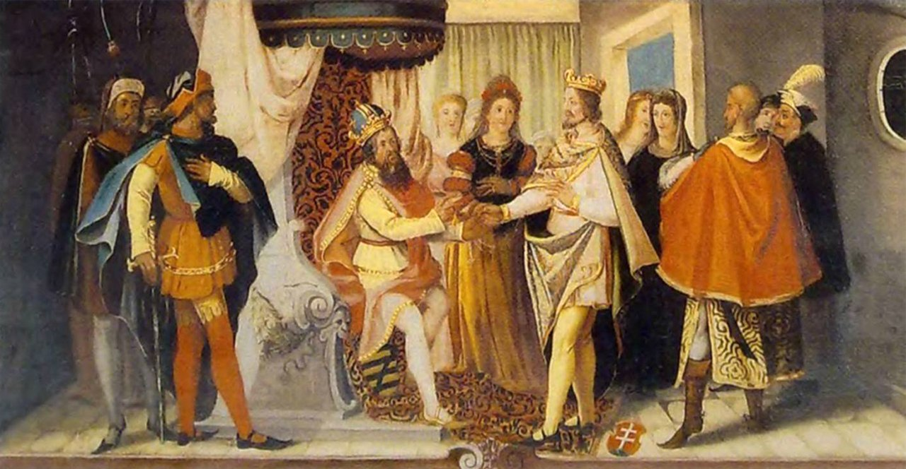

Ének száll a szélben Szent István királyról, kinek dicsősége nincs ma tőlünk távol, ő nagy, erős hittel nemzetet teremtett, értékként ránk hagyva a keresztény rendet, Mégis megtörtént, hogy bölcs sámán és táltos, Koppány vére tapadt a négy vár fokához, dalolt az ősi hit egy utolsó lángot, majd elnyelte végleg a Holdvilág-árok... Ma mi is így vagyunk, kicsit néha félünk, meddig tart nemzetünk, meddig élhet népünk? Hány fiatalnak kell más országba menni ahhoz, hogy életét el tudja kezdeni? Talán egyszer büszke lesz, aki majd itt él, hisz a magyarságunk fontosabb mindennél, sok apró kis gyöngyszem vagyunk mi a láncban, együtt ünnepeljük Szent Istvánt egy táncban...
Magyar nyelven s magyar szóval él, alkot, sír mind, ki magyar, s így zörög határon túl az avar! Leszakadt határok, Trianon, bánat, szívedben cipeled Magyar hazádat, új kenyér illata, s áldás Magyar hazára! Augusztus húsz az államalapítás varázsa, görögtűz, tűzjáték parázsa, emlékezés magyarságra!


Államalapító Szent királyunk, Ki megalapította országunk. Kinek emléknapján minden évben Az egész ország ünnepel! Ez a nap minden magyar életében fontos, Ez a nap augusztus 20-a. Az államalapítást és Szent Istvánt Ünnepeljük e napon! Tisztelgünk a neve és személye előtt, Felvonulással és körmenettel alakjára emlékezünk Első Szent királyunk ünnepén. Majd e napot végül az Ünnepi tűzijáték koronázza meg!
Parányi sóhajt nyög, megzizzen a szalma, hegyes tarló szusszan - aratásnak vége... ...becsület, kitartás, a munka szorgalma - beragyogja tiszta Magyar égnek kékje. Magyar föld gazdájáé szeretne lenni, szorgos emberé, kinek kérges a keze - jobban senki nem tudja a kaszát fenni... ...mint borotva vág, józan paraszti esze, felőrölte a gond - megtörte erejét, mint aranyszemeket a morajló malom, roppant a gyémántcsont - tűrte a nehezét... ...ember legyen földjén, ne egy igás barom, ragyogó, friss hajnalfény harmatot fakaszt, reggel illatára dalolnak a rigók, magyar asszony, kerek kenyereket dagaszt, cipók sorakoznak - kövér, formás cipók, aranyszínre sülnek, mint a nap korongja, mosolygós, ropogós, jó magyar kenyerek, a kemence izzik - hangosan morogja... ... nyíltszívű emberek, dolgos a kezetek... ...szomjukat oltsa a piros bor zamata, hófehér kenyérbél testüket táplálja, smaragdzöld legyen az új világ tavasza - jó, kövér Magyar föld biztos meghálálja! Csöpp, nap-szívta hajú, maszatos gyermekek, ropogós vekniből nagyokat harapnak, pufók, rózsás-arcú - acélos jellemek... magyarnak születtek, magyarnak - szabadnak, gazdájáé lenne a kövér, Magyar föld, azé, ki megöntözte verejtékével, táplálta kitartás a vetést - tengerzöld, átfestette a tarlót bíborvérével, talpuk alatt lüktet az otthonunk lelke, ó, édes, szép hazánk - nőjön a gabona, áldja meg munkájuk - magyarok Istene, övék e drága föld - nemzetünk vagyona, ...piros vér buggyant ki megfeszült eréből - hófehér sifonnal kötözte az asszony, húzta az igáját - zöld lett a reménytől a tiszta, Magyar föld - örökül maradjon!